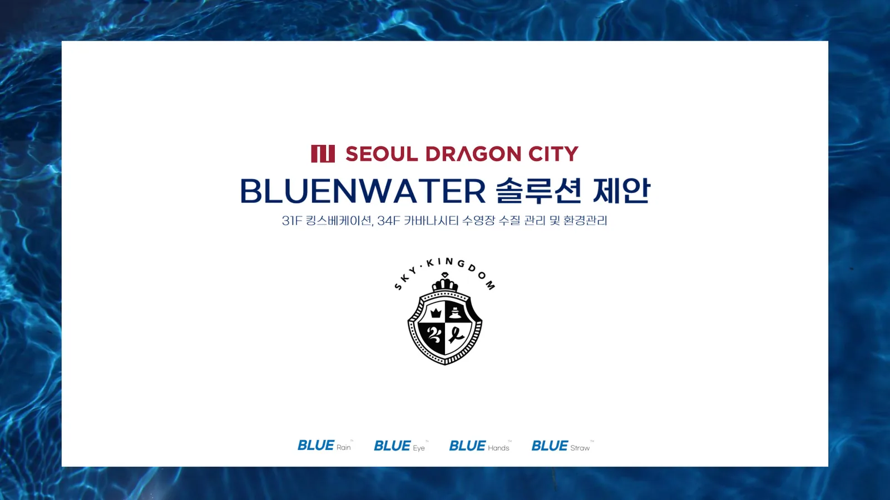
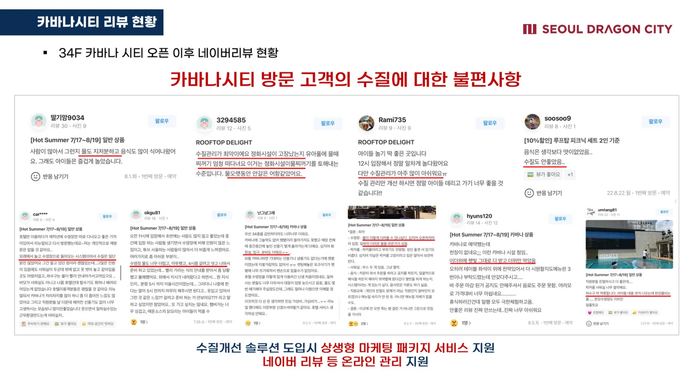
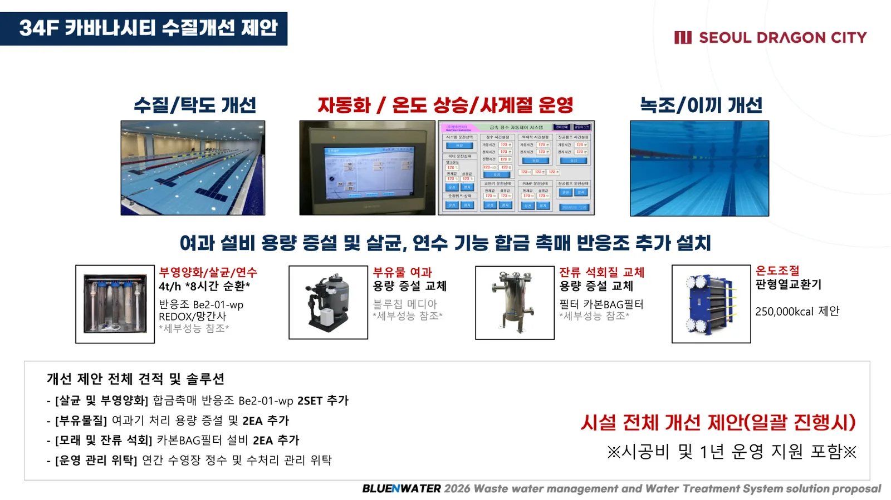
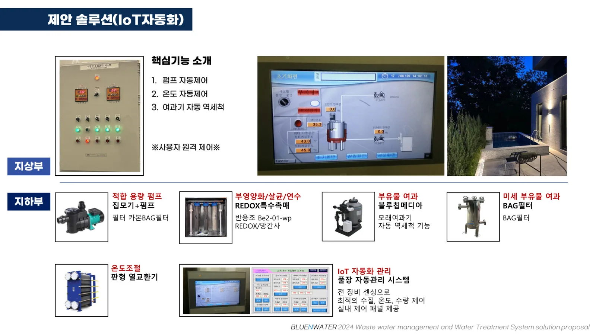
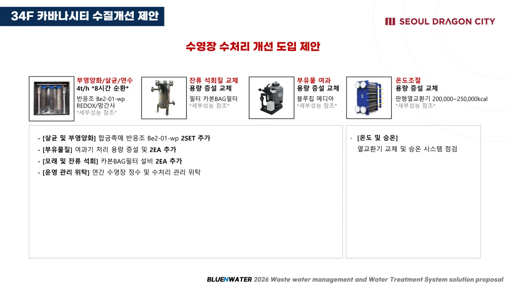

Hospitality Water Consulting
ソウルドラゴンシティ
ホテルプール運用コンサルティング
ホテルプールの水質管理分析と改善ソリューション提案を支援した運用コンサルティング事例です。設備導入実績ではありません。
本件は設備導入・採択・納入完了の実績ではなく、運用環境の分析と改善ソリューション提案支援の事例です。

Seoul Dragon CityOperating Consulting Support
Scope
- ホテルプール運用環境の分析
- 濁度・浮遊物・循環系統の改善提案
- 水質管理運用支援の検討
Status
運用コンサルティング・ソリューション提案支援事例
Not included
設備導入完了、納入完了、採択実績を示す表現は使用しません。
Proposal Images
コンサルティング提案画像



